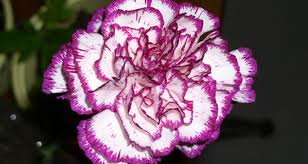

lilis o lirios
Cuenta la leyenda que la flor de Lilium brotó de las lágrimas de Eva, cuando fue expulsada del Edén y se dio cuenta que estaba esperando un bebé. Otra leyenda griega explica que esta flor se creó de las gotas de leche que la Diosa Hera dejó caer cuando amamantaba a su hijo Hércules.FLOR ALCATRAZ
La flor Alcatraz es muy elegante, se utiliza para decoraciones de bodas y fiestas importantes, pues representa pulcritud, fineza y durabilidad. La leyenda cuenta que soñar o regalar flor Alcatraz significa: amabilidad, sensibilidad, compasión y belleza.
